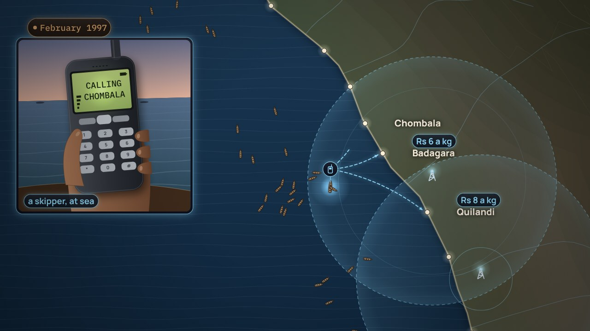

← Anterior · Película 6 de 11
Quién lo hace, y dónde cambia el significado
Japón funciona con dos frecuencias. Una empresa tiene dos tipos de cliente. Roles, actores, y una traducción en el borde.
Temas › Arquitectura empresarial › El mapa antes de los datos
Una mañana imaginada en 2045: una calle que intercambia electricidad de sus baterías, una cuadrilla enviada antes de una falla. Luego, los 140 sistemas de hoy, por fin ubicados debajo de las capacidades a las que sirven: tres para un mismo trabajo, una capacidad con solo una hoja de cálculo, y un sistema que no sirve a nada. Hoy, el objetivo y el camino son tres dibujos.
La película está en inglés, con subtítulos en español. Esta página, los capítulos y las preguntas están en español.
Presiona Reproducir, o salta a un capítulo. Activa Pausa para pensar y la película se detiene con una pregunta al final de los capítulos.

Descargar el video (en inglés)Archivos de subtítulosLeer el guion (en inglés)
¿Y ahora?
Las tres preguntas de Pausa para pensar, para una clase o un equipo. Abre una para ver la respuesta.
Los labs de esta película, y sus situaciones, entre los 12 labs y las 26 situaciones de la serie. Tu avance queda en este navegador.
Desarma: Ubica los sistemas →Desarma: Redibújalo en ArchiMate 4Tú decides: 2 situacionesTodos los labs
Película 7 de 11.
← Anterior · Película 6 de 11
Japón funciona con dos frecuencias. Una empresa tiene dos tipos de cliente. Roles, actores, y una traducción en el borde.

Siguiente · Película 8 de 11 →
Los pescadores de Kerala, 1997. Cuarenta y dos pedidos, la prueba del capitán. Metas seguidas hasta las medidas que las comprueban.